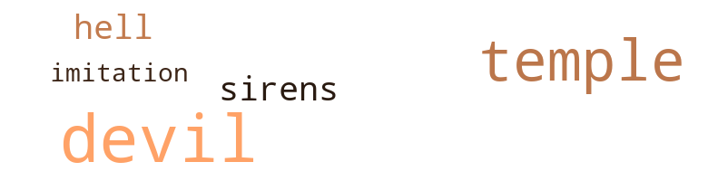

52 music-related terms matched in this text.
Most frequent terms in this topic: music (12); line (6); dancing (5); suites (3); pipe (3)

belt_out.v.01
Definition: sing loudly and forcefully
| word |
sentence |
| belted |
The tight gray trousers were belted with a broad strip of black leather and fastened with a gold disk . |
dance.n.01
Definition: an artistic form of nonverbal communication
| word |
sentence |
| dance |
Koshar raised his left hand , and the musicians began the Introduction to the changing partners dance . |
| dance |
Vibrations suffused his transparency and the pulsing music made the three dust particles that had settled on his cal axial face seven hundred and thirty years ago dance about him . |
dance.v.02
Definition: move in a pattern; usually to musical accompaniment; do or perform a dance
| word |
sentence |
| dancing |
Apparently the soldier had had a similar experience , for at the first turn of the music , Jon saw the soldier was dancing too . |
| dancing |
Gowns whirled into momentary flowers , and he was dancing with the brown-haired woman the soldier had been dancing with a moment before . |
| dancing |
Gowns whirled into momentary flowers , and he was dancing with the brown-haired woman the soldier had been dancing with a moment before . |
| dancing |
He was dancing with the Duchess . |
| dancing |
When I was dancing with the King , he told me how he had dreamed of my brother this morning . |
kick.v.04
Definition: kick a leg up
| word |
sentence |
| kick |
" When you kick , throw your head back , " she instructed . |
| kick |
Suppose he decides to kick us out in the street . " |
| kick |
Pay up or I 'll kick you all out . |
music.n.01
Definition: an artistic form of auditory communication incorporating instrumental or vocal tones in a structured and continuous manner
| word |
sentence |
| Music |
Very definitely he heard it - Music had started . |
| music |
A ten-piece orchestra - three bass radiolins , a theremin , and six blown shells of various sizes - was making a slow , windy music from the dais . |
| music |
Apparently the soldier had had a similar experience , for at the first turn of the music , Jon saw the soldier was dancing too . |
| music |
The music signaled for partners to change . |
| music |
" We can have it on . . . " A burst of music signaled the change . |
| music |
She moved easily , and he had just remembered that he ought to smile back to be polite when the music sounded the change . |
| music |
As his hands went out , the music stopped , and the languid voice of the King came over the loudspeaker . |
| music |
The musicians started the music once more , partners found one another , and the talking and laughing grew in his ears like waves , like crumbling rock , like the cutter teeth clawing into the rock face of the ore deposits . . . Jon shook his head . |
| music |
The music was very , very happy . |
| music |
Apparently he managed to accumulate an amazing store of information , about all sorts of things - electronics , languages , even music . |
| Music |
Music sang through him , and his huge upper facet reflected the stars . |
| music |
Vibrations suffused his transparency and the pulsing music made the three dust particles that had settled on his cal axial face seven hundred and thirty years ago dance about him . |
| music |
Just as they had made contact , before the music stopped and once more their thoughts would become separate , individual , and they would lose awareness of each other and of the hundreds of other crystals that lay over the desert , under the clear perpetual night ) - just then a strident dissonance pierced among them . |
| Music |
Music , very light and fast , was coming from below the balcony . |
| music |
The music had stopped . |
musical_instrument.n.01
Definition: any of various devices or contrivances that can be used to produce musical tones or sounds
| word |
sentence |
| instrument |
" I do n't feel too . . . " The pilot Started , and then reached forward absently to crumple a sheet of tin foil he had left on the instrument panel , in which , a few hours ago , had been a filet sandwich that he and the co-pilot had shared between them . |
| instrument |
She put the screw driver down and put the instrument back on the desk . |
| instruments |
Across the lobby wind instruments wailed , and Jon paused the stairs . |
pipe.n.04
Definition: a tubular wind instrument
| word |
sentence |
| pipe |
Alter was hanging head and white hair down from a pipe that went from the stone chimney to a supporting pipe that was fastened by a firm collar to the roof . |
| pipe |
Alter was hanging head and white hair down from a pipe that went from the stone chimney to a supporting pipe that was fastened by a firm collar to the roof . |
| pipe |
She was hanging double from her waist over the pipe . |
rhythm.n.04
Definition: the arrangement of spoken words alternating stressed and unstressed elements
| word |
sentence |
| rhythm |
Stepping into the room was like stepping into a cricket 's den , the subtle tsk-tsk of a thousand clocks repeated and repeated , overlapping and melting , with no clear , discernible rhythm . |
sing.v.02
Definition: produce tones with the voice
| word |
sentence |
| sang |
Music sang through him , and his huge upper facet reflected the stars . |
| sang |
Jon , the voice sang through drumbled silicate . |
| sang |
There , sang Petra . |
suite.n.01
Definition: a musical composition of several movements only loosely connected
| word |
sentence |
| suites |
Prime Minister Chargill always carried on him a complete set of keys to the private suites of the royal family . |
| suites |
When the drunk returned to the side street , his weaving gait ceased , his hand came from behind his back , and in it was a complete set of keys to the private suites of the royal family . |
| suites |
A guard wearing a size seventeen uniform came down the hall of the west wing of the castle , stopped before a large double door on which was a silver crown , indicating the room of the Queen Mother ; he took a complete set of keys to the private suites of the royal family from his cloak , and locked her Majesty firmly in her room . |
theremin.n.01
Definition: an electronic musical instrument; melodies can be played by moving the right hand between two rods that serve as antennas to control pitch; the left hand controls phrasing
| word |
sentence |
| theremin |
A ten-piece orchestra - three bass radiolins , a theremin , and six blown shells of various sizes - was making a slow , windy music from the dais . |
tune.n.01
Definition: a succession of notes forming a distinctive sequence
| word |
sentence |
| tune |
Well , when will you have some tune ? " |
| line |
At a scribed line , the plain changed color to an even more luminous red . |
| line |
Crossed signals from another line , she figured . |
| line |
It dipped , pose , and he pulled back his transparent eyelid again , this line when the wave was down , and thought he saw figures on the fibrous hammock of the boat . |
| line |
Then a dark-haired , barefoot boy broke from his place in line , ran to the wooden gate , and vaulted over . |
| line |
And when I was in line , I figured I 'd explain to the men at the desk . |
| line |
That 's when I ran - out of line and jumped the fence . |
whistle.v.01
Definition: make whistling sounds
| word |
sentence |
| whistle |
His blue parakeet was delicate and beautiful ; he had taught it to whistle . . . there were always crumbs on the bottom of the cage ; changing the paper was a nuisance . ) |
| whistle |
Someone else gave a slow whistle through the microphone . |
| whistled |
Jon almost whistled at his reflection . |
| whistled |
He heard the rings of the shower curtain sliding along the shower rod ; the rattle of the towel rack ; silence ; a few whistled notes . |
wind_instrument.n.01
Definition: a musical instrument in which the sound is produced by an enclosed column of air that is moved by the breath
| word |
sentence |
| wind |
Across the lobby wind instruments wailed , and Jon paused the stairs . |
98 violence-related terms matched in this text.
Most frequent terms in this topic: hurt (13); fight (11); fighting (7); killed (6); blades (5)

anger.n.01
Definition: a strong emotion; a feeling that is oriented toward some real or supposed grievance
| word |
sentence |
| anger |
His emotions were not fine and drawn , but rather great shafts of anger or fear fell about him without focus or apparent source . |
boot.v.01
Definition: kick; give a boot to
| word |
sentence |
| booting |
That , unfortunately had the unpleasant side effect of booting down your index of refraction a couple of points , which is why you keep fading in dim light . |
bruise.n.01
Definition: an injury that doesn't break the skin but results in some discoloration
| word |
sentence |
| bruises |
The very shadows of the room were like red bruises on the stone . |
brutality.n.02
Definition: a brutal barbarous savage act
| word |
sentence |
| barbarism |
Civilization was reduced beyond barbarism . |
butcher.v.01
Definition: kill (animals) usually for food consumption
| word |
sentence |
| slaughtered |
In their transparent tubes , the fish floated in a state near suspended animation , vibrated gently , were kept at a constant 82 ° , were fed , were fattened , were sorted according to age , size , and species ; then slaughtered . |
destroy.v.04
Definition: put (an animal) to death
| word |
sentence |
| destroyed |
" You call that treason , keeping these idiots from destroying themselves , eating themselves up in a war with a nameless enemy , something so powerful that if there were any consideration of real fighting , we could be destroyed with a thought . |
| destroyed |
But Jon , and this is n't government propaganda , because I made the discovery myself : whatever is behind the barrier caused the radiation rise that destroyed Telphar . |
draw.v.23
Definition: pull (a person) apart with four horses tied to his extremities, so as to execute him
| word |
sentence |
| drawn |
He was being drawn up toward the sound of the whirling helicopter blades . |
fight.n.02
Definition: the act of fighting; any contest or struggle
| word |
sentence |
| fighting |
" You call that treason , keeping these idiots from destroying themselves , eating themselves up in a war with a nameless enemy , something so powerful that if there were any consideration of real fighting , we could be destroyed with a thought . |
| combat |
" Besides , " he added , " if we do n't give them some combat soon , we 'll lose - and I mean lose as in ' misplace ' - the war . " |
| combat |
Active combat . |
| combat |
" A few bombs over that generator , then well have had active combat , and everyone will be happy . " |
fight.n.05
Definition: a boxing or wrestling match
| word |
sentence |
| fight |
A yell rose , and somebody had started a friendly fight at the end of the bar . |
| fight |
Then they lay down beside the little cyst of embers , the glowing scab of fight on the darkness , and slept . |
| fight |
The fight became white , , then silver white . |
| fight |
Soon , streaks of fight speared the yellow clouds and pried apart the billowing rifts . |
| fight |
You wait to go out and fight . |
| fight |
He turned down another hallway where carved busts and j statues sat in niches in the walls , a fight glowing blue behind those to the left , yellow behind those to the right . |
| fight |
Dawn reached across the water till at last the early fight fell on the shore of an island . |
| fight |
Behind the piers , the towers of the City were lanced with gold , and as the sun rose , gold fight dropped further down the building faces . |
fight.v.02
Definition: fight against or resist strongly
| word |
sentence |
| fight |
We will use them to fight a war . |
| fight |
We will use them to fight a war . |
| fighting |
" Then what ? " asked Tel. " We do not know who or what we are fighting , " repeated Geryn . |
| fighting |
" We will be fighting ourselves , but we will not know it . |
| fighting |
" Well , assuming we get beyond the radiation barrier , assuming we find what people we 're fighting , assuming we find which one of them is carrying around the Lord of the Flames , and assuming we can all three of us get to him at once-assuming all that , there 's no problem . |
| fighting |
Then he was struggling again , struggling hard enough that had he still the strength , he would have tom himself in half , knowing while he struggled that perhaps the wilcat had been malika after all , or not caring if he were less , only fighting to pull himself away from the pain , realizing that blood had begun to seep from beneath the log again , just a tiny trickle . |
| fought |
Often they fought with one another , and that was called a war . |
| fighting |
" What are we fighting ? |
| fighting |
Why are we fighting ? " |
| fight |
" Because , " interrupted Geryn , suddenly pointing directly at Tel 's face , " we have to fight . |
gag.v.06
Definition: cause to retch or choke
| word |
sentence |
| choked |
And wonder if that was what he had wanted to be free of all along while he had sputtered at the prison guards , choked on the food , and could not communicate his outrage . |
gun.n.01
Definition: a weapon that discharges a missile at high velocity (especially from a metal tube or barrel)
| word |
sentence |
| guns |
That 's how the generators and the anti-aircraft guns got constructed . " |
harm.v.01
Definition: cause or do harm to
| word |
sentence |
| harm |
" It 's a primitive race that ca n't possibly harm us , especially now that its - its generators have been knocked out . |
hurt.v.04
Definition: cause damage or affect negatively
| word |
sentence |
| hurt |
" Let me try to tell you why I had to hurt your friend . |
indignation.n.01
Definition: a feeling of righteous anger
| word |
sentence |
| outrage |
And wonder if that was what he had wanted to be free of all along while he had sputtered at the prison guards , choked on the food , and could not communicate his outrage . |
injury.n.01
Definition: any physical damage to the body caused by violence or accident or fracture etc.
| word |
sentence |
| hurt |
The eyes still showed puzzled hurt . |
| harm |
Try and convince him that it 'll do more harm than good . |
kick.v.04
Definition: kick a leg up
| word |
sentence |
| kick |
" When you kick , throw your head back , " she instructed . |
| kick |
Suppose he decides to kick us out in the street . " |
| kick |
Pay up or I 'll kick you all out . |
kick_back.v.02
Definition: spring back, as from a forceful thrust
| word |
sentence |
| kicked |
He kicked up once , missed , and tried again . |
| kick |
" Now when I count three , kick the leg I 'm holding under you and throw your head back as hard as you can . |
| kicked |
Tel threw and kicked , and felt Alter give his leg an extra push . |
| kick |
As Quorl began to kick dirt onto the coals , he lectured the boy , apparently on Tloto and perhaps a few other philosophical concepts . |
kidnap.v.01
Definition: take away to an undisclosed location against their will and usually in order to extract a ransom
| word |
sentence |
| kidnap |
" My plan is to - you understand it 's not just my plan , but only a small part in a great plan , a plan to save us all - my plan is to kidnap Prince Let from the palace . |
| kidnaped |
Already I 've arranged to have Price Let kidnaped . " |
| kidnapped |
" Look , " explained Alter , " you 're being kidnapped . |
| kidnaped |
" He 's been kidnaped . " |
| kidnap |
How could anybody kidnap the Prince ? |
| kidnaped |
If the Prince were kidnaped , certainly his jailors should not tell him stories of beautiful mornings and sunsets , or teach him to do impossible tilings with his body . |
| kidnap |
Look , Rara , how can Geryn possibly kidnap . . . " " Be quiet , " snapped Rara . |
kill.v.10
Definition: cause the death of, without intention
| word |
sentence |
| killed |
I nearly got myself killed trying to escape from the mines . |
| killed |
And a couple of people did get killed helping me . |
| kill |
They had to rearrange the molecular structure of some of your more delicate proteins and do a general overhaul on your sub-crystalline structure so the radiation would n't kill you . |
| killed |
But an authority , Vice-Supervisor Nitum of Koshar Synthetic Food Concerns ( whose name you do not need to remember , as he was killed three days later in a street brawl ) clenched his jaw ( unshaven ; he had been called to the office a half an hour early over the sunken cargo boats ) , nodded his head , and issued a few non-official directives himself . |
| killed |
I . . . we ... Long ago we killed them when we found out . |
| kill |
Anyway , we do n't kill them any more . |
| killed |
" Then , beyond the lava fields , we discovered what it was that had enlarged the bodies of the forest people , what it was that had killed all green things beyond the jungle . |
| kill |
I did n't kill him on purpose . |
| killed |
The other two were caught and killed . " |
knife.n.02
Definition: a weapon with a handle and blade with a sharp point
| word |
sentence |
| knife |
In the freezing chest he found the remains of a baked fish , so he got a sharp knife from over the sink , and cut a piece . |
| knife |
As the priest raised the long three-pronged knife , the boy 's hands went tight around the crutches . |
| knife |
Tloto cringed , and the boy sucked in a breath as the knife went down , feeling his own flesh part under the blades . |
musket_ball.n.01
Definition: a solid projectile that is shot by a musket
| word |
sentence |
| ball |
Suddenly he flung up a ball of gray cloth , which caught on the line , unrolled , and became identifiable as a pair of dark gray trousers . |
| ball |
It contracted into a small ball with a volume of 4/3pie3 , and disappeared . |
open_fire.v.01
Definition: start firing a weapon
| word |
sentence |
| fire |
" You know , if you used a smaller coin than a centiunit for the one you fire into the missing comer , say a deciunit , the chances that it would hit both corner coins would go up , that is your randomness . " |
pain.v.02
Definition: cause emotional anguish or make miserable
| word |
sentence |
| hurt |
Why should I move to hurt him ? |
| hurt |
Tomar , it was the same voice Jon used to use when I 'd hurt myself and he wanted to help . |
| hurt |
One guard , who wore a size seventeen uniform was knocked unconscious , but no one else was hurt . |
| hurt |
" Nobody 's going to hurt you , silly , " Tel said . |
| hurt |
" Ouch , " Tel said , and jumped , though nothing had hurt him . |
| hurt |
Yes , I know it hurt him . |
| hurt |
That 's how he knew where you were , when you were hurt . |
| hurt |
It does n't hurt that much , and it heals . |
| hurt |
" Stop that Now stop it , or you 'll hurt yourself . " |
| hurt |
It 'll hurt you . " |
| hurt |
I had to do something where the main point was n't whether it hurt me or not . |
projectile.n.01
Definition: a weapon that is forcibly thrown or projected at a targets but is not self-propelled
| word |
sentence |
| missile |
I 'm nearly at the solution now , and to have to stop and work on bomb sightings and missile trajectories . . . Tomar , there 's a beauty in abstract mathematics that should n't have to be dulled with that sort of thing . |
| missile |
device knocked out and a missile hurled at it . |
| missile |
Another wailing missile took the sky , and a moment later a screaming plane answered , tearing down the night . |
| missile |
The Duchess looked overhead as another missile exploded . |
resentment.n.01
Definition: a feeling of deep and bitter anger and ill-will
| word |
sentence |
| resentment |
Jon felt a sudden knot of resentment tighten inside him . |
riot.n.01
Definition: a public act of violence by an unruly mob
| word |
sentence |
| riots |
Apparently riots had started in the streets around the old Rahsok Refrigeration Houses . |
shoot.v.02
Definition: kill by firing a missile
| word |
sentence |
| shot |
It shot the length of his forty-two mile , super-heated body . |
shooting.n.02
Definition: killing someone by gunfire
| word |
sentence |
| shooting |
Suddenly he leaned back his head back , his sharp Adam 's apple shooting high in his neck and quivering . |
sting.n.03
Definition: a painful wound caused by the thrust of an insect's stinger into skin
| word |
sentence |
| bite |
" Just trying to make a living , that 's all " " Want a bite ? " |
sword.n.01
Definition: a cutting or thrusting weapon that has a long metal blade and a hilt with a hand guard
| word |
sentence |
| blades |
From above the house came the faint beat of helicopter blades . |
| blades |
Unaware that he was dead , she was trying to get him back into the chair , when the helicopter blades got very loud . |
| blades |
He was being drawn up toward the sound of the whirling helicopter blades . |
| blades |
Alter heard the roar of helicopter blades . |
| blades |
Then the cracked edge of the glass passed over her , and it was colder , and the blur and roar of helicopter blades was above . |
| sword |
As Tltltrlte reached the bottom of the steps , she raised her sword . |
war.v.01
Definition: make or wage war
| word |
sentence |
| warring |
And warring on them wo n't exorcise it . " |
weapon.n.01
Definition: any instrument or instrumentality used in fighting or hunting
| word |
sentence |
| arm |
Their arm bands showed the royal insignia of the palace guards . |
whip.v.03
Definition: thrash about flexibly in the manner of a whiplash
| word |
sentence |
| whipped |
The chord crashed again , and the crack whipped back and forth vivisecting him . |
whip.v.04
Definition: strike as if by whipping
| word |
sentence |
| lashed |
The yellow length of the beach lashed across his mind so that it stung . |
wound.n.01
Definition: an injury to living tissue (especially an injury involving a cut or break in the skin)
| word |
sentence |
| wound |
He entered the ballroom by way of a high , arched alcove in which were small white meat , red meat , dark meat of fish ground into patties , cut into stars , strips of fillet wound into imitation sea shells , tiny braised shrimp , and Stuffed baby smelts . |
| wound |
Tel peeled back the strip of rind he 'd loosened from the kharba fruit , licked the juice from the yellow wound , and followed Rara . |
31 religion-related terms matched in this text.
Most frequent terms in this topic: Devil (15); temple (10); sirens (2); hell (2); temples (1)

hell.n.01
Definition: any place of pain and turmoil
| word |
sentence |
| hell |
If I see another crack in the wall , another spot of light getting in , I 'll claw my hands off trying to break through and to hell with what you want . |
| hell |
Jon had his tight , but was wondering where the hell were . . . Suddenly his eye-stalk caught the great form that he knew must be Arkor coming down over the rocks ( with Alter and Tel . |
imitation.n.01
Definition: the doctrine that representations of nature or human behavior should be accurate imitations
| word |
sentence |
| imitation |
He entered the ballroom by way of a high , arched alcove in which were small white meat , red meat , dark meat of fish ground into patties , cut into stars , strips of fillet wound into imitation sea shells , tiny braised shrimp , and Stuffed baby smelts . |
satan.n.01
Definition: (Judeo-Christian and Islamic religions) chief spirit of evil and adversary of God; tempter of mankind; master of Hell
| word |
sentence |
| Devil |
He broke it open , gave her half , and they went to the edge of the roof and leaned on the balus - trade , looking to the street below , then over the roofs of the other houses of the Devil 's Pot and up to the darkening towers . |
| Devil |
Your brother may come back to you , and even the thieves and beggars in the Devil 's Pot will have a chance to do some honest work . " |
| Devil |
" I was going to say , " said the Duchess , " that you were to get to the Prince , who is being kept at an inn in the Devil 's Pot , and accompany him to the forest people . |
| Devil |
Instead of answering , he said , " Give me the address of the inn at the Devil 's Pot . " |
| Devil |
At the edge of the Devil 's Pot , the woman with the birthmark on the left side of her face was tapping a cane and holding out a tin cup . |
| Devil |
In front of a doorway two blocks on , a pair of open-toed black boots with gold disks were left - and stolen from that doorway exactly forty seconds later by a hairdresser who was returning to her home in Devil 's Pot . |
| Devil |
The warehouses were just a few blocks away from the official boundary of the Devil 's Pot . |
| Devil |
The message was , in brief , that twenty-three men , among them Captain Clemen , had been trampled to death by an estimated two and a half thousand hungry residents of the Devil 's Pot , most of them immigrants from the mainland . |
| Devil |
In the Devil 's Pot , Tel had just gotten over a case of the runs which had kept him away from food all day . |
| Devil |
It was planned , all the streets are regular , there 's no Devil 's Pot , nor could there ever be one . |
| Devil |
" Do n't be silly , " Rara was saying in the inn at the Devil 's Pot . |
| Devil |
" But my son . . . " " There are more fishermen 's sons down here in the Devil 's Pot than you can shake a stick at - fishermen 's sons , farmer 's sons , blacksmiths ' sons , sons ' sons . |
| Devil |
Behind the door to one room that he did not enter , the red-headed Duchess of Petra was standing by the window of her apartment , gazing over the roofs of the city , the great houses of the wealthy merchants and manufacturers , over the hive-like buildings which housed the city 's doctors , clerks , 4 secretaries , and storekeepers , down to the reeking clapboard and stone alleys of the Devil 's Pot . |
| Devil |
The Devil 's Pot overturned its foul jelly at the city 's edge . |
| Devil |
Fear , hunger , a little more fear , no work , more fear , and every last one of these poor souls will be a first class , grade-A citizen of the Devil 's Pot . |
siren.n.01
Definition: a sea nymph (part woman and part bird) supposed to lure sailors to destruction on the rocks where the nymphs lived
| word |
sentence |
| sirens |
There were sirens at the dock when they laid him on the dried leaves of the forest clearing . |
| sirens |
The cameras were probably working , but there had been no bells , no sirens , no rush of guards . |
temple.n.03
Definition: an edifice devoted to special or exalted purposes
| word |
sentence |
| temples |
I made sketches of their temples , tried to map their nomadic movements . |
| temple |
Near the temple a few geometrical buildings cast maroon pinions of shadow over the russet expanse . |
| temple |
The red haze in the deserted temple pulsed and the jade columns flickered . |
| temple |
The moon was high enough to light the entire lithic arena as well as the small temple at its edge . |
| temple |
In front of the temple stood a man in black robes who blew on a huge curved shell . |
| temple |
Suddenly a group of people were led from the temple onto the platform . |
| temple |
The priest in the black robe disappeared into the temple , and emerged again with something that looked to the boy from this distance for all the world like a back-scratcher . |
| temple |
Once the boy wandered to the temple on the arena of rock . |
| temple |
When he looked up from the rock , he saw that the priest had come from the temple and was staring at him . |
| temple |
The priest sounded the shell again and the prisoners came out of the temple : first three boys , then an older girl , then a man . |
| temple |
There were many people on the webbing of paths that came from the temple rock . |